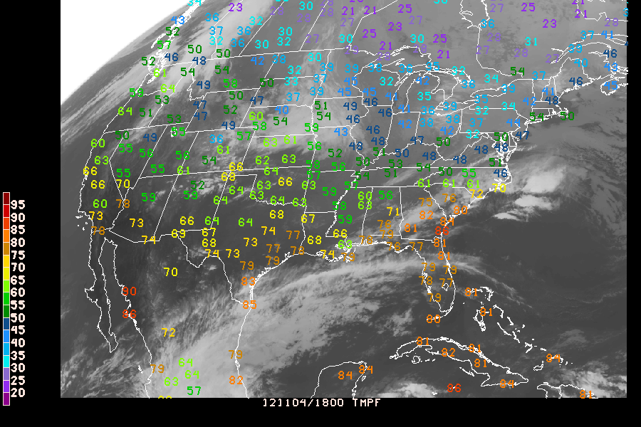

GPEND when you are finished generating your output files. Otherwise, the "End of File" message won't get written to the files. Without the "End of File" message, you will be unable to view or print your picture.Each of the parameters you select will be given a color corresponding this color list.
sfparm = tmpk;relh;wsym;dwpf
colors = 1;2;3;4
TMPK will be color 1 (vanilla), RELH will be color 2 (red), WSYM will be color 3 (green), DWPF will be color 4 (blue)
By Range: First-last-increment
colors = 1-31-5
This would give colors 1-35 in increments of five (1,6,11,16,21,26,31)
Colors will repeat when all have been matched to a parameter. Color zero will not plot the parameter. Blank input defaults to color 1.
By Parameter Value:
Color-coding of any parameter may be done based on its own value or on the value of any other computable parameter. There is a one-to- one correspondence between the elements in the color list and the elements in the parameter list (e.g., SFPARM). To color-code any parameter, replace its corresponding color number in the COLORS list with the form:
(v1;v2;...;vN-1/c1;c2;...;cN/PARM/E) or
(v1-vN-1-vInc/c1-cN-cInc/PARM/E) or
a combination of a list and a range
where the v's are parameter values, the c's are color numbers, and PARM is the parameter whose value determines the color. If PARM is omitted, the parameter will be color-coded based on its own value. The number of values must be one less than the number of colors. If a value range is used, an increment must be specified. If a color range is used and no increment is specified, 1 is assumed. For example, to color-code a marker based on the 3-hour flash flood guidance value, the color element corresponding to the parameter MARK could be specified as:
COLORS = (0.5;1;1.5;2;3/2;19;21;22;6;4/FF03)
or
COLORS = (50;60;70;80/2;3;4;5;6/TMPF)
or
COLORS = (20-95-5/30-14//U)
meaning that values less than or equal to .5 inch would be plotted with color 2, values greater than .5 but less than or equal to 1 would be plotted with color 19, etc. The E is a flag to indicate whether to include the break value with the lower range or the upper range of values. Valid values are L and U, respectively. The default is L for inclusion in the lower range of values. In the above example, the first data range is X <= 0.5, the second is 0.5 < X <= 1.0, etc. If the U flag is added, the ranges change to X < 0.5, 0.5 <= X < 1.0, etc.
Enhancement tables are found under the directory $GEMTBL/luts.
Several predefined color tables are provided with the GEMPAK, and can be used within GEMPAK programs by using the LUTFIL variable.
Additionally, the enhancement can be changed after a mapping program has been run with the look up table command at the program prompt, ie:
LUT enhancement.tbl
Where enhancement is the name of the file. The default enhancement used for each image type is defined in the file IMGTYP.TBL. To select a different default enhancement for a given satellite image, simply enter a new enhancement name under the DEFAULT LUT FILE column.
If you want to add new enhancement tables of your own, be sure to follow the format of one of the existing files. Location of RGB values is dependent on column location. When new enhancements are created, you will need to add the name to the $GEMTBL/luts/enhance.tbl file. Note that the enhancement names must end with the .tbl extension.
Plot an IR image from this morning for the continental United States with temperature (F) observations overlayed, colored according to value (see above). Some notes:
You'll be plotting obs on top of an image with SFMAP:
AREA = us-
GAREA = 20;-120;55;-60
SATFIL = $SAT/GOES-13/4km/IR/IR_20121104_1800
RADFIL =
IMCBAR =
SFPARM = TMPF
DATTIM = 1800
SFFILE = metar
COLORS = (20-95-5/30-14//U)
MAP = 31
MSCALE = 0
LATLON = 0
TITLE = 1
CLEAR = y
PANEL = 0
DEVICE = xw
PROJ = sat
FILTER = y
TEXT = 1//2
LUTFIL =
STNPLT =
CLRBAR = 1
LSTPRM =
GEMPAK-SFMAP>r

Device drivers translate the graphics commands generated by GEMPLT into format specific commands for each output device. The following device drivers are currently supported by GEMPAK:
XW : X Windows terminal
PS : Generalized PostScript
GF : GIF format (uses X11 window)
GIF : GIF format (rendered in software)
NC : NTRANS CGM
VG : Vector Graphics (N-AWIPS Product Generation)
TIFF : TIFF file
RBK : AWIPS RedBook Graphics
XW - X windows are by far the most popular format for displaying graphics on workstations. The portability in display features provides the user with the ability to design displays that can be viewed locally, or to any other display console which provides display access to the computer initiating the output. As a result, distributed processing of data sets is possible.
The XW device is capable of dumping the contents of the current frame to a GIF file by using the GSAVE [NAME] command at the GEMPAK prompt.
PS - Postscript output is generally used for hardcopy devices. The attractive feature about Postscript is that the graphics are independent of the resolution of the hardware which generates the image. This is because the graphics commands use vectors to define graphics primatives. Ultimately, the resolution of the image is determined by the printer or other output device which is typically a much higher resolution device than the workstation console.
The PS driver now supports image types as well.
GF - GIF format graphics files are one of the most popular forms for storing and transporting image information due to the widely accepted standard, and their relatively efficient use of data compression. GIF images are raster data, and therefore are limited by the resolution of the hardware on which they are generated. These images are typically used for console display, but are less attractive for hardcopy output.
GIF - The standard GF driver utilizes the X display to generate its graphics output, as well as to obtain hardware fonts. GIF provides for GIF file generation without connecting to an X server. All fonts will be rendered in software.
NC - NTRANS CGM driver for creating META files for use with the NTRANS viewing Software.
The DEVICE definition in GEMPAK programs utilizes the following format:
DEVICE = device | name | X ; Y-size | color-type
NAME
ps.plt. The gif driver GF default output file is gempak.gif. If the file gempak.gif already exists, then a sequence number is appended, so that the next file written is gempak.gif.1. This is useful when generating multiple gif images from the same application.X ; Y-size
If xsize and ysize are not specified the following defaults will be used:
CMODE
CMODE is the color mode for the device. It is only used by the PS driver. Possible values are:
M : Monochrome (one color - black)
G : Gray scales, 20
C : 32 colors
The default is M.
Not all options are valid for all devices.
 It is very important that you run
It is very important that you run GPEND when you are finished generating your output files. Otherwise, the "End of File" message won't get written to the files. Without the "End of File" message, you will be unable to view or print your picture.